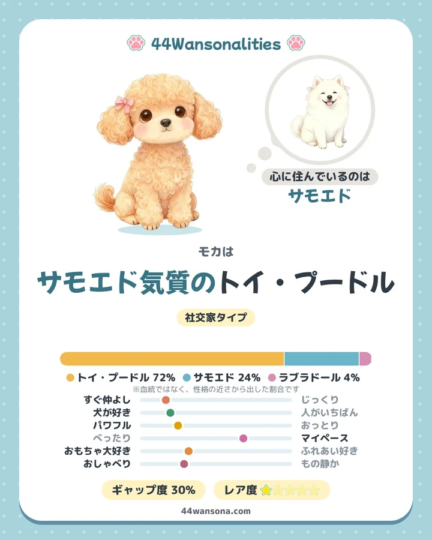
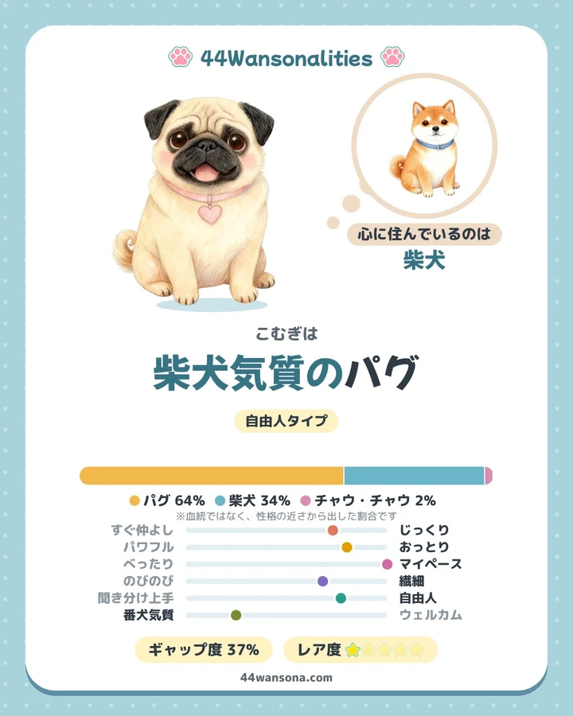
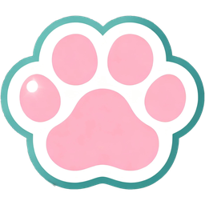
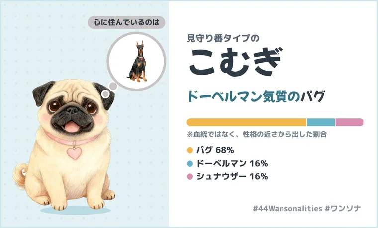
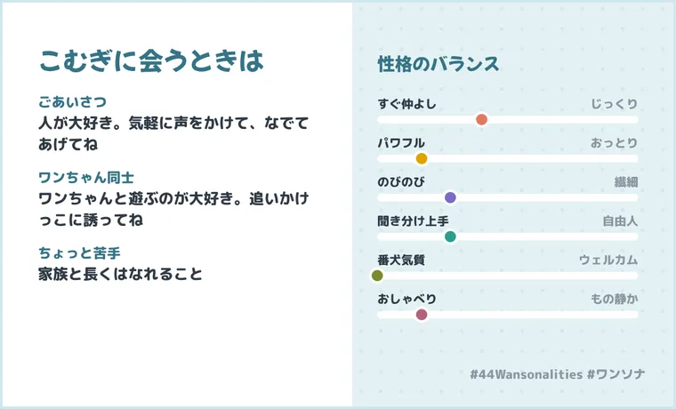
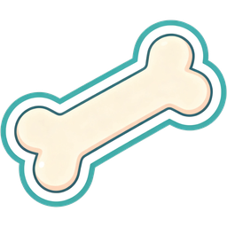
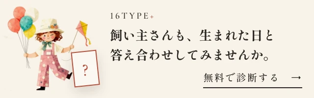

うちの子の心に住んでいるのは、どの犬種？
ふだんの様子から30の質問に答えると、うちの子の性格にいちばん近い「気質の犬種」がわかります。
保護犬・ミックスの子も、そのまま診断できます
うちの子の写真でも、イラストでも作れます。そのままSNSにシェアできます。
結果は読むだけで終わりません。毎日のお世話やおでかけに役立つ機能つき。
うちの子のことが、もっとわかる

おでかけ・ワン友づくりに



もしものときと、毎日の記録に
Morrill ほか（2022, Science誌／Darwin's Ark）の公開データと、アメリカン・ケネル・クラブ（AKC）の犬種ごとの評価をもとにしています。質問は毎回ちがう組み合わせで出るので、答えるほど結果がくわしくなります。
こむぎは「ドーベルマン気質のパグ」でした！ あなたの子は何気質？ #44Wansonalities #ワンソナ
世界には、同じ子はひとりもいません。どの子も、かけがえのない宝物です。
見た目は小さくても、心はどっしり。りりしい顔をしていても、中身は甘えんぼ。見た目だけではわからないところに、その子らしさがかくれています。このサイトで、そんなかくれた一面にふれて、ふふっと笑ってもらえたらうれしいです。
今、この画面の向こうにいるワンちゃんも。まだ出会っていない、どこかのワンちゃんも。みんなが、大好きな人のそばで、しあわせに過ごせますように。
見た目はパグ。でも心は…？
30問・約4分・無料

44Wansonalities（よんよん ワンソナリティーズ）